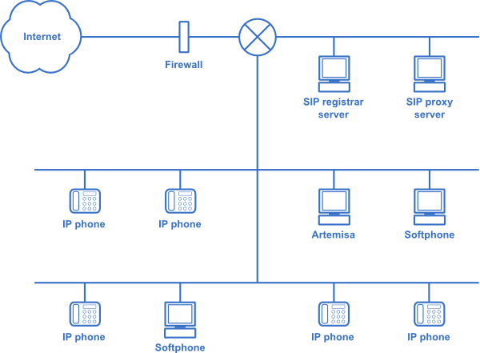
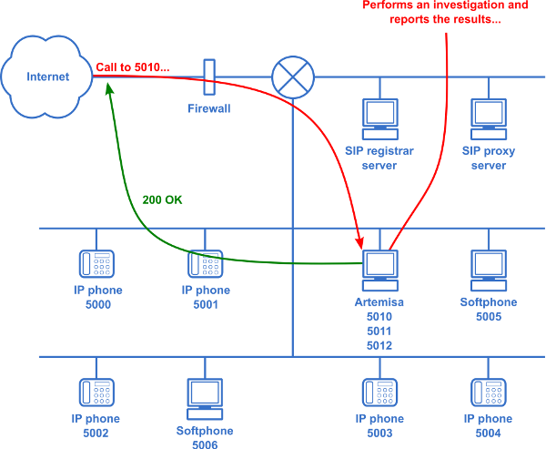

Introduction¶
What is Artemisa?¶
Artemisa is a honeypot software designed for VoIP networks which implements the SIP protocol. Basically, it registers itself just like a conventional telephone to the registrar server inside the enterprise domain where it is deployed, and detects malicious activity at an early stage. In an advanced deployment, Artemisa can play a role in the real-time adjustment of the security policies of the domain.
What is a honeypot and why is it needed?¶
A honeypot is an information system resource whose value lies in unauthorized or illicit use of that resource. [1]
A honeypot is like a bait, which simulates being some well-known system or service, that without being part of the production itself, it has the aim of watching and studying the behavior of anyone who interacts with it. In other words, a honeypot is a parallel system to the production one, whose main objective is to simulate being this last one, and to achieve that anyone who interacts with it believes that she/he is doing it on the production system.
Suppose you have a VoIP network like this:
As is shown in the picture, the network has an Internet connection through a firewall. Suppose you have received some SIP attacks last month and therefore you want to improve its security. Setting up the firewall in order to deny any unknown IP address is not a practical solution, since you would likely be blocking many interesting calls whose IP addresses you don’t know. Then, here is where Artemisa takes place. Suppose that Artemisa is registered with twenty extensions to the SIP registrar server or PBX. When a hacker tries to investigate the network, she/he will find out the extensions of Artemisa. By that time, Artemisa will have the calls investigated, and will have reported the intruder. With this information, the system administrator will be able to properly configure the firewall. It’s also possible to make Artemisa run some user-configurable script that automatically adjusts the domain policies.
How does it work?¶
Artemisa is based on the analysis of SIP messages. It analyzes the data found in the messages, and according to the results obtained by several verifications, Artemisa classifies the message. Such classification can be: attack tool, scanning, ringing, SPIT, among others.
You just need to run Artemisa in a machine inside your domain and configure it in order to let it register at least with one extension to the SIP registrar server of your domain. Is recommended to deploy Artemisa in a virtual machine in order not to compromise a production machine.
The following picture briefly depicts how Artemisa works:
First, a call is received and it’s addressed to Artemisa (of course, the intruder doesn’t know about its existence). Artemisa answers the call, and at the same time investigates it. After finishing the investigation, it shows the report of results on screen and sends it by e-mail (if it’s configured).
About the call analysis¶
The analysis involves the following points (we explain them briefly):
- Look for fingerprints: The attack could have been created with a well-known attacking tool.
- Check the domain names: Are the domain names found in the SIP messages real? Can some public information about them be obtained?
- Check the SIP ports: Are the SIP ports of the attacker opened as they are pretended to be?
- Check media ports: Are media ports opened?
- Check request URI: Is the call (in such case) addressed to the honeypot?
- Check for ACK: Does the caller/attacker send the correct ACK messages?
- Check received media: Is there (RTP) media involved?
About the results¶
When the investigation of the call concludes, the results are shown in different manners:
- Console of Artemisa
- Plain text file on directory /results
- HTML file on directory /results
- Notification by e-mail (if it’s activated and properly configured in /conf/artemisa.conf)
This is an example of the results shown in the console of Artemisa (for privacy reasons in this document, the domain names and IP addresses have been replaced with “X”):
[2010-04-02 02:57:56] ******************************* Information about the call *******************************
[2010-04-02 02:57:56]
[2010-04-02 02:57:56] From: 3001 in XXX.XXX.XXX.XXX
[2010-04-02 02:57:56] To: 3001 in XXX.XXX.XXX.XXX
[2010-04-02 02:57:56] Contact: 3001 in XXXX:5061/udp
[2010-04-02 02:57:56] Connection: XXX.XXX.XXX.XXX
[2010-04-02 02:57:56] Owner: XXX.XXX.XXX.XXX
[2010-04-02 02:57:56] Via 0: XXX.XXX.XXX.XXX:5061/udp
[2010-04-02 02:57:56] User-Agent: Twinkle/1.4.2
[2010-04-02 02:57:56]
[2010-04-02 02:57:56] ************************************* Classification *************************************
[2010-04-02 02:57:56]
[2010-04-02 02:57:56] + Checking fingerprint...
[2010-04-02 02:57:56] |
[2010-04-02 02:57:56] | User-Agent: Twinkle/1.4.2
[2010-04-02 02:57:56] |
[2010-04-02 02:57:56] | No fingerprint found.
[2010-04-02 02:57:56]
[2010-04-02 02:57:56] + Checking DNS...
[2010-04-02 02:57:56] |
[2010-04-02 02:57:56] | + Checking XXXX...
[2010-04-02 02:57:56] | |
[2010-04-02 02:57:56] | | IP resolved: XXX.XXX.XXX.XXX
[2010-04-02 02:57:56] | | WHOIS data found.
[2010-04-02 02:57:56] | |
[2010-04-02 02:57:56] | | Category: Interactive attack
[2010-04-02 02:57:56] |
[2010-04-02 02:57:56] | + Checking XXX.XXX.XXX.XXX...
[2010-04-02 02:57:56] | |
[2010-04-02 02:57:56] | | This is already an IP address. Nothing done.
[2010-04-02 02:57:56] |
[2010-04-02 02:57:56] | + Checking XXX.XXX.XXX.XXX...
[2010-04-02 02:57:56] | |
[2010-04-02 02:57:56] | | This is already an IP address. Nothing done.
[2010-04-02 02:57:56]
[2010-04-02 02:57:56] + Checking if SIP port is opened...
[2010-04-02 02:57:56] |
[2010-04-02 02:57:56] | + Checking XXXX:5061/udp...
[2010-04-02 02:57:56] | |
[2010-04-02 02:57:57] | | Port state: open|filtered
[2010-04-02 02:57:57] | |
[2010-04-02 02:57:57] | | Category: Interactive attack
[2010-04-02 02:57:57]
[2010-04-02 02:57:57] + Checking if media port is opened...
[2010-04-02 02:57:57] |
[2010-04-02 02:57:57] | + Checking XXXX:8000/udp...
[2010-04-02 02:57:57] | |
[2010-04-02 02:57:58] | | Port state: open|filtered
[2010-04-02 02:57:58] | |
[2010-04-02 02:57:58] | | Category: Interactive attack
[2010-04-02 02:57:58]
[2010-04-02 02:57:58] + Checking request URI...
[2010-04-02 02:57:58] |
[2010-04-02 02:57:58] | Extension in field To: 3001
[2010-04-02 02:57:58] |
[2010-04-02 02:57:58] | Request addressed to the honeypot? Yes
[2010-04-02 02:57:58]
[2010-04-02 02:57:58] + Checking for ACK...
[2010-04-02 02:57:58] |
[2010-04-02 02:57:58] | ACK received: No
[2010-04-02 02:57:58] |
[2010-04-02 02:57:58] | Category: Scanning
[2010-04-02 02:57:58]
[2010-04-02 02:57:58] + Checking for received media...
[2010-04-02 02:57:58] |
[2010-04-02 02:57:58] | Media received: Yes
[2010-04-02 02:57:58] |
[2010-04-02 02:57:58] | Category: SPIT
[2010-04-02 02:57:58]
[2010-04-02 02:57:58] + The message is classified as:
[2010-04-02 02:57:58] | Interactive attack
[2010-04-02 02:57:58] | Scanning
[2010-04-02 02:57:58] | SPIT
[2010-04-02 02:57:58]
[2010-04-02 02:57:58] ************************************** Correlation ***************************************
[2010-04-02 02:57:58]
[2010-04-02 02:57:58] Artemisa concludes that the arrived message is likely to be:
[2010-04-02 02:57:58]
[2010-04-02 02:57:58] * A SPIT call.
[2010-04-02 02:57:58]
[2010-04-02 02:57:58] NOTICE This report has been saved on file ./results/2010-04-02_12.txt
[2010-04-02 02:57:58] NOTICE This report has been saved on file ./results/2010-04-02_12.html
[2010-04-02 02:57:58] NOTICE Sending this report by e-mail...
User-configurable scripts¶
There are some bash scripts that are executed when the investigation of a call is finished. The script executed is appropriate to the nature of the call (e.g. SPIT). These are found on directory /scripts.
- on_flood.sh
- on_spit.sh
- on_scanning.sh
Each script is executed with a set of arguments given, which are defined in file /conf/actions.conf. These parameters are for example: IP addresses, port numbers, extensions, et cetera. The administrador is able to use these information provided by Artemisa to create automatical responses to the attacks, e.g. setting a rule in iptables for dropping all packets incoming from the attacker’s IP address when flood is detected. Interesting ideas for usage of these scripts are:
- Setting firewall (e.g. iptables) rules to drop the attacker IP
- Setting rules in the VoIP PBX (e.g. Asterisk) to hang up calls incoming with certain IP or extension
- Launch other tools (e.g. svcrash.py to crash SIPVicious)
Record of calls¶
The audio of the received calls is stored (if it’s configured) with WAV format on directory /recorded_calls.
Features¶
- Has a SPIT detection mechanism
- Can record calls, which is useful to detect and analyze SPIT
- Can take actions based on fingerprints
- Detects INVITE flooding
- Detects OPTIONS flooding
- Generates reports by e-mail when it receives a call
- Has different configurable modes of working
- It’s open source